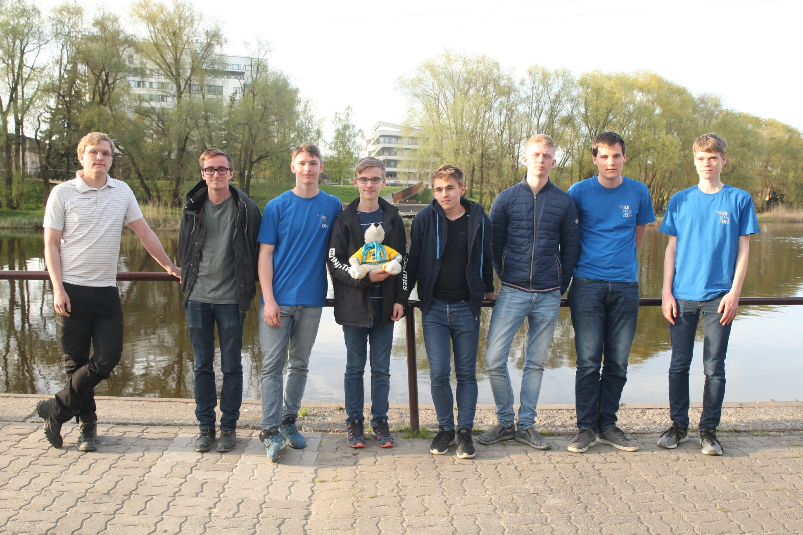
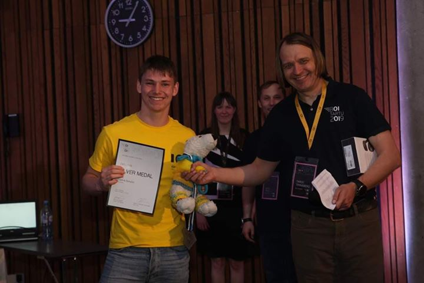
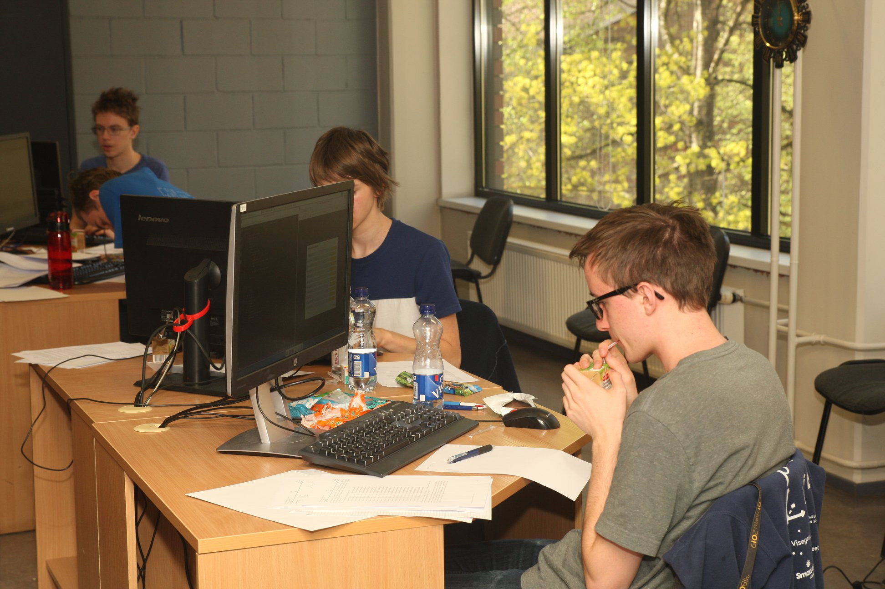
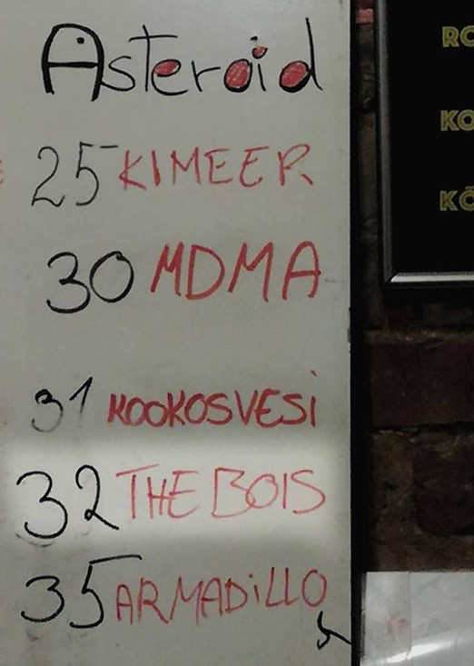
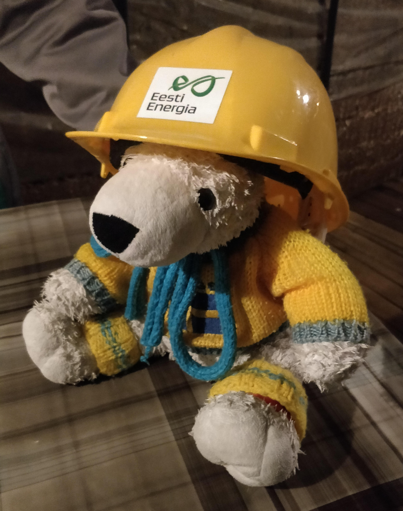
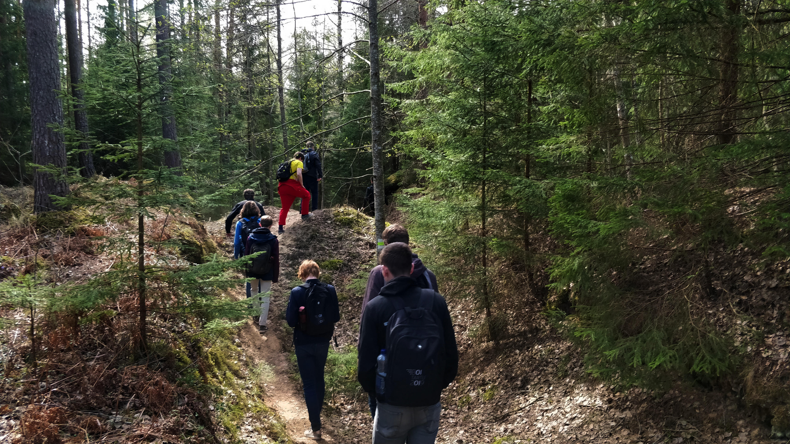
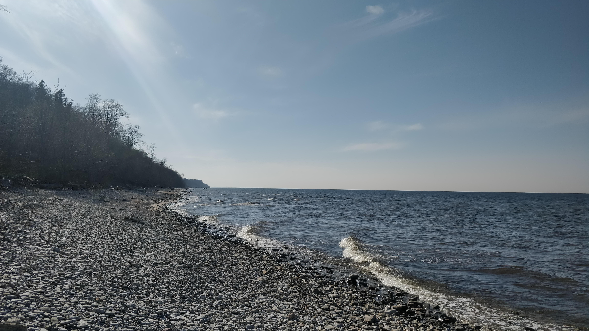

Slut för i år
Nu är tävlingen över och det svenska laget har vunnit många fina priser! Utöver de vanliga brons, silver och guld medaljerna delades det i år även ut speciella priser för många olika saker. Ett av dessa speciella priser gavs ut till den mest intensiva programmeraren, vilket estländarna definierade som den programmerare som skrev mest data till usb-minnet datorn var startad från. Fredrik utklassade alla med sin extrema intensitet på hela 600 MB, vilket var mer än dubbelt så mycket som andra plats! Som pris fick Fredrik en väldigt intensiv expanderbar boll.
Priser gavs också ut till de tre lataste programmerarna, alltså för den programmerare med kortast lösning som gav 100 poäng (räknat i antalet tokens). Det visade sig att Hugo var en av de tre lataste programmerarna på BOI då hans lösning på olympiads var kortare än alla andras! Som pris för detta fick Hugo en hängmatta.
Det svenska laget presterade även starkt på medaljfronten, då laget tillsammans tog tre silvermedaljer och två bronsmedaljer. Fredrik slutade på 405 poäng, vilket blev en 6e plats och fösta silverplats. Hugo, med starka resultat från den andra dagen, slutade på 387 poäng och 8e plats, vilket också blev silver. Carl slutade på 334 poäng, eller 12e plats, och tog också silver. Gustav och Loke tog båda brons med placeringar på 22a och 25e plats.
Nu är vi på väg tillbaka till Sverige, tyvärr utan Sven, då vår älskade isbjörn har blivit kidnappad av det norska laget. För att se vad som händer med Sven får ni se till att följa de kommande vetenskapstävlingarna.
Tävlingsdag 1 & utflykt till Narva
Om ni har tittat på resultatlistan efter första tävlingsdagen (http://ranking.eio.ee), så har ni säkert märkt att det ligger många svenskar högt upp på listan! Just nu ligger Fredrik på en tredjeplats i hela tävlingen med hela 240 poäng! Carl ligger på en klar silverplats med 196 poäng. Hugo, Loke och Gustav ligger alla på bronsplats, men precis under silvergränsen, med 162, 162, och 159 poäng respektive. Slutligen ligger Niklas en bit under bronsgränsen med 82 poäng.
Efter fem timmars intensiv problemlösning gick det svenska laget till ett av Tartus escape rooms, där de placerade sig på rummets topplista!
Dagen efter åkte vi på utflykt till ett gruvområde utanför Narva i nordöstra Estland. Efter en bussresa på två timmar började vi med en rundtur i den underjordiska gruvan. Där fick vi lära oss mycket om vad gruvan hade används till innan den stängdes 2011 och om hur gruvarbetet såg ut. Vi fick också åka ett gammalt gruvtåg, se på olika grävmaskiner och äta en speciell gruvarbetarsoppa.
Efter rundvandringen i gruvan fick vi öva på våra navigeringskunskaper och på vårt nordiska samarbete då vi, tillsammans med det norska och danska laget, skulle ut och orientera i skogen nära gruvan. Att ta sig runt i skogen var inte helt enkelt eftersom det fanns många små åsar och dalar från att gruvarbetarna flyttat runt marken och eftersom många av dalarna hade fyllts med källvatten.
Efter orienteringsrundan åkte vi en slags lastbilsrally tillbaka till bussarna, vilket gick förvånansvärt snabbt och var väldigt kul. Vi stannade också till vid en utkikspunkt och vid en plats där källvattnet rann ut från berget.
På väg tillbaka till Tartu stannade vi vid ett vattenfall på den norra kusten. Här gick vi också ner till en väldigt stening strand och försökte, med varierande framgång, kasta macka ut i havet. När vi till slut kom tillbaka till Tartu förberedde sig lagmedlemmarna inför morgondagens tävling genom att fylla på sitt godisförråd och gå till sängs tidigt. Nu hoppas vi på många fina placeringar imorgon!
BOI!

Hej och välkomna till resebloggen till årets Baltic Olympiad in Informatics! I år är vi i Tartu, Estland och det svenska laget består av Fredrik Ekholm, Carl Westerlund, Gustav Kalander, Hugo Eberhard, Loke Gustafsson och Niklas Sandén. Lagledare är jag, Erik Amirell Eklöf, och Jonas Olsson.
Hälften av det svenska laget, alltså Carl, Gustav och Hugo, var redan i Tartu efter en fysiktävling. Resan till BOI började alltså med att samla resten av det svenska laget i Stockholm för att sedan åka färja till Tallinn. Tågen till Stockholm fungerade ungefär så bra som man skulle kunna tänka sig, alltså stora förseningar och AC som var sönder. Men på grund av stora marginaler hann jag, Nickas och Loke precis med färjan efter ungefär 1 och en halv timmes försening till Stockholm.

Efter nattfärjan till Tallinn skulle vi åka buss sista biten till Tartu, dock hade vi en hel dag att spendera i Tallinn. Vi spenderade denna tid på bästa möjliga sätt, nämligen genom att skriva programmeringstävlingen KTH-challenge. Vi som befann oss i Tallinn letade alltså upp ett bibliotek, med gratis WiFi, och satte oss där. Resultaten för det svenska laget var över lag starka, med placeringar på 2a, 5e, 7e, 9e och 13e plats (hela resultatlistan finns här).

Efter en bussresa på ungefär 2 timmar var vi framme i Tartu vid klockan 8 på kvällen. Här träffade vi den andra halvan av det svenska laget och plockade upp BOI-swag som, utöver ryggsäck och T-shirt, i år även inkluderade BOI-temade strumpor, en väldigt lätt handduk och lite andra saker. Efter detta spenderade vi resten av kvällen på BOIs välkomstfest, som tog plats i en simhall med flera rutschbanor och 9 olika typer av bastu!
Nästa dag började med en två timmars practice session. Under denna upptäckte vi att domarsystemet visar detaljerad information om bedömningen för varje individuellt testfall, istället för det normala där enbart begränsad information om bedömningen för hela testfallsgrupper avslöjas. På grund av detta kan man relativt enkelt läcka ut information om strukturen på de hemliga testfallen, vilket vi i det svenska laget gjorde under practice session för att fusklösa ett av problemen (som egentligen var helt trivialt). Hoppas ingen känner för att fuska under själva tävlingen!


Efter practice session var det öppningsceremoni och sedan en orienteringstävling i Tartu där vi skulle springa runt till olika stationer och lösa någon uppgift för att få veta vilken nästa station var. Eftersom det finns en stark korrelation mellan tävlingsresultat och mängden godis som har ätits, gick vi också förbi en godisaffär för att handla snacks till morgondagens tävling.
Under kvällen hade lagmedlemmarna det roligt med en annan programmeringstävling, Google CodeJam, samtidigt som vi ledare satt i ett långt möte där vi, utan framgång, försökte övertala arrangörerna att minska mängden information som domarsystemet ger ut. Men nu ser vi fram emot första tävlingsdagen, som är imorgon!